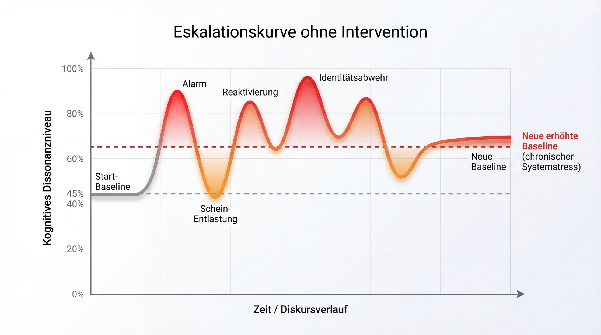
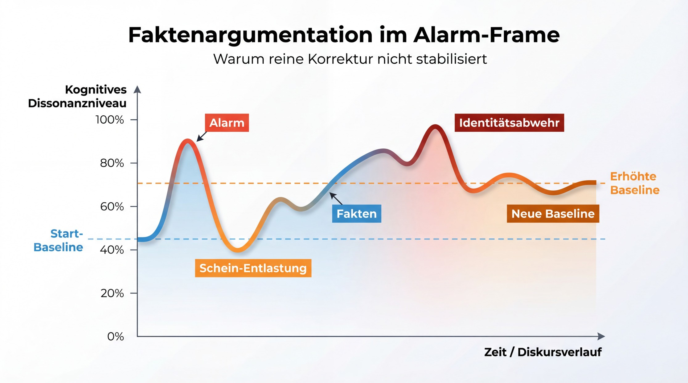
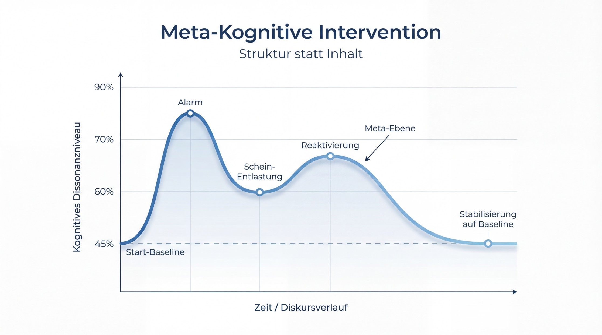
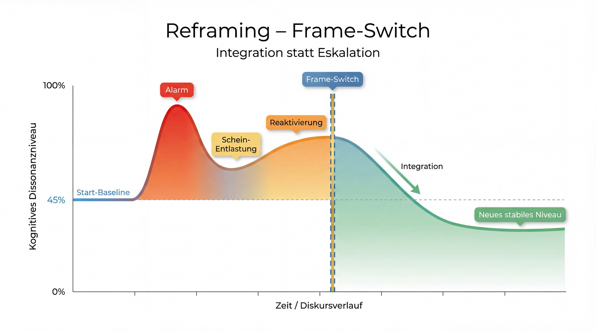
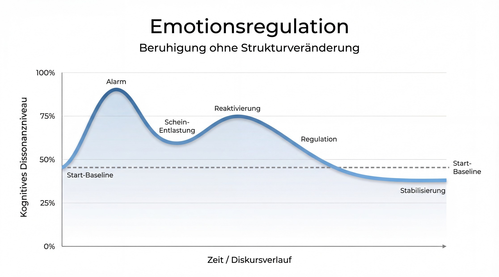
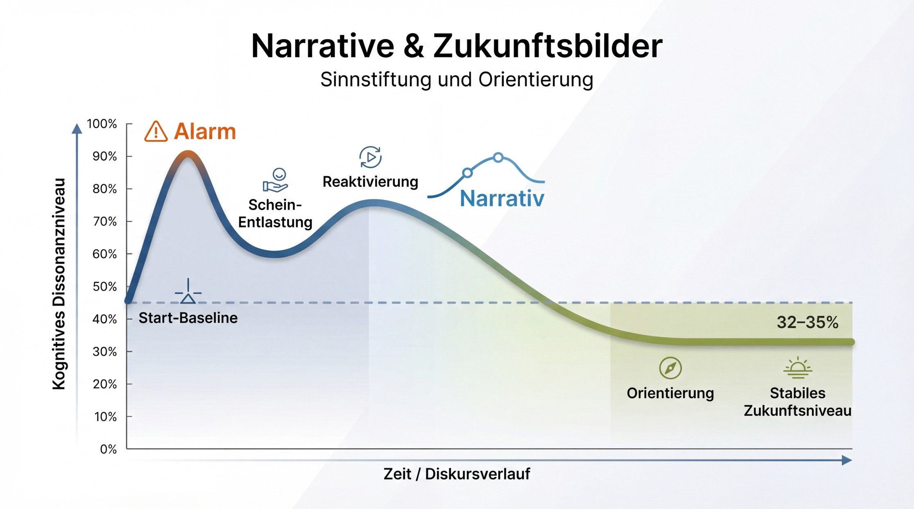
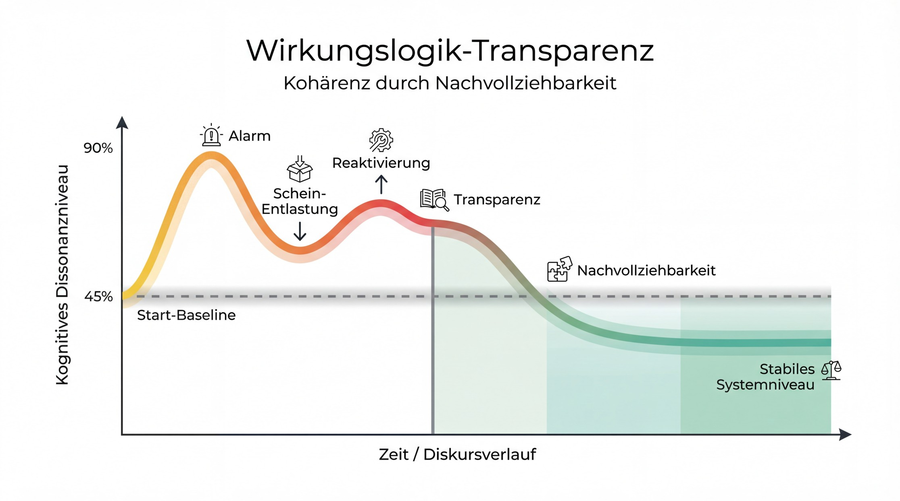
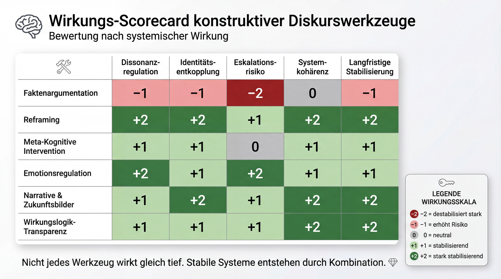

Gesellschaften destabilisieren sich nicht, weil ihnen Informationen fehlen. Sie destabilisieren sich, wenn Orientierung verloren geht.
In Zeiten schnellen technologischen, ökologischen und sozialen Wandels erleben viele Menschen ihre Umwelt nicht mehr als kohärent. Entscheidungen wirken komplex, Prozesse undurchsichtig, Entwicklungen überfordernd. Was früher selbstverständlich war, wird fragil. Und wo Kohärenz fehlt, entsteht kognitive Dissonanz.
Kognitive Dissonanz ist kein politischer Kampfbegriff, sondern ein psychologischer Mechanismus. Sie beschreibt den inneren Spannungszustand, der entsteht, wenn Wahrnehmung, Erwartung und Realität nicht mehr zusammenpassen. Dieser Zustand ist unangenehm. Unser Gehirn will ihn reduzieren - möglichst schnell.
Und genau hier beginnt eine Dynamik, die wir derzeit in vielen Demokratien beobachten.
Ein irritierender Wandel. Ein alarmierendes Narrativ. Eine einfache Erklärung. Ein klarer Schuldiger.
Die Dissonanz sinkt - scheinbar. Die Welt wirkt wieder verständlich.
Aber diese Entlastung entsteht häufig nicht durch Integration von Komplexität, sondern durch ihre Reduktion. Komplexe Zusammenhänge werden auf monokausale Erzählungen verkürzt. Verantwortung wird personalisiert. Ohnmacht verwandelt sich in Empörung.
Und was passiert dann häufig? Wir reagieren mit Fakten.
Wir liefern Zahlen. Wir erklären Zusammenhänge. Wir widerlegen falsche Behauptungen. In der Sache häufig korrekt - in der Wirkung jedoch ambivalent.
Denn Fakten, die im bestehenden Alarm-Frame präsentiert werden, reaktivieren häufig genau das Bedrohungsbild, das sie korrigieren sollen. Identität fühlt sich angegriffen. Abwehrmechanismen greifen. Die Baseline verschiebt sich. Polarisierung stabilisiert sich.
Die entscheidende Frage lautet deshalb nicht:
Wer hat die besseren Argumente?
Sondern:
Welche Kommunikationsweise stabilisiert ein System - und welche verstärkt seine Destabilisierung?
In diesem Artikel möchte ich unterschiedliche Diskurswerkzeuge systematisch vergleichen. Nicht moralisch. Nicht parteipolitisch. Sondern entlang ihrer Wirkung auf:
das kognitive Dissonanzniveau
Identitätsdynamiken
gesellschaftliche Kohärenz
langfristige Stabilität
Wir schauen uns an:
Was passiert ohne Intervention?
Was passiert bei reiner Faktenargumentation?
Was verändert sich durch Reframing?
Welche Rolle spielen Emotionsregulation, Narrative und Wirkungslogik?
Nicht jede Entlastung ist echte Integration. Nicht jede Erklärung ist Stabilisierung. Und nicht jedes Werkzeug greift gleich tief.
Wenn wir verstehen wollen, wie Demokratien resilient bleiben, müssen wir verstehen, wie Orientierung entsteht - und wie sie wiederhergestellt werden kann.
Die Eskalationskurve - Was passiert ohne Intervention?
Bevor wir über Werkzeuge sprechen, müssen wir verstehen, was passiert, wenn nichts regulierend eingreift.

Stellen wir uns eine Gesellschaft vor, die sich stark verändert: technologische Umbrüche, wirtschaftlicher Druck, kulturelle Verschiebungen, geopolitische Unsicherheiten. Für viele Menschen entsteht dabei ein Gefühl von Irritation. Etwas stimmt nicht - aber es ist noch nicht klar, was genau.
Diese Irritation ist der Ausgangspunkt. Psychologisch betrachtet steigt das kognitive Dissonanzniveau.
Dann folgt der erste Alarmimpuls. Ein Ereignis, eine Schlagzeile, ein emotionales Narrativ. Die Unsicherheit wird als Bedrohung gerahmt. Die Aufmerksamkeit verengt sich. Die Amygdala übernimmt. Das System geht in Alarmbereitschaft.
An dieser Stelle geschieht etwas Entscheidendes:
Das Gehirn sucht nicht nach Wahrheit. Es sucht nach Entlastung.
Eine einfache Erklärung wird angeboten. Eine monokausale Ursache. Ein klarer Schuldiger.
Und tatsächlich: Die Dissonanz sinkt kurzfristig. Die Welt wirkt wieder verständlicher. Die Komplexität scheint reduziert.
Doch diese Entlastung ist fragil.
Denn sie basiert nicht auf Integration, sondern auf Verkürzung. Die zugrundeliegende Komplexität bleibt bestehen. Neue Ereignisse, widersprüchliche Informationen oder Gegenargumente reaktivieren das Bedrohungsgefühl.
Was passiert dann?
Die Dissonanz steigt erneut - häufig stärker als zuvor. Identität wird aktiviert. Gruppenzugehörigkeit wird relevanter. Abwehrmechanismen greifen.
Die Gesellschaft beginnt zu oszillieren.
Alarm. Entlastung. Reaktivierung. Abwehr. Neue Entlastung.
Mit jeder Welle verschiebt sich die Baseline ein Stück nach oben. Das Stressniveau normalisiert sich auf einem höheren Level. Polarisierung wird zum Dauerzustand. Misstrauen stabilisiert sich. Das System gewöhnt sich an Erregung.
Am Ende steht keine Integration, sondern eine neue erhöhte Grundspannung.
Das ist die Eskalationskurve.
Sie zeigt: Ohne regulierende Intervention stabilisiert sich ein Diskurs nicht von selbst. Er pendelt sich nicht automatisch wieder ein. Er driftet - in Richtung chronischer Dissonanz.
Bevor wir also über Fakten, Reframing oder andere Werkzeuge sprechen, müssen wir dieses Ausgangsmuster verstehen.
Denn jedes Werkzeug greift an genau dieser Dynamik an.
Warum Fakten allein die Eskalation nicht stoppen
Wenn gesellschaftliche Debatten eskalieren, ist die naheliegende Reaktion: Mehr Fakten. Mehr Aufklärung. Mehr Evidenz.
Und auf den ersten Blick wirkt das plausibel. Wenn Menschen falsche Annahmen haben, korrigiert man sie. Wenn Zusammenhänge missverstanden werden, erklärt man sie.
Doch hier liegt ein grundlegendes Missverständnis.
Fakten wirken nicht im luftleeren Raum. Sie wirken innerhalb eines Rahmens.
Wenn dieser Rahmen bereits alarmiert ist - wenn ein Thema als Bedrohung codiert wurde - dann werden neue Informationen nicht neutral verarbeitet. Sie werden durch den bestehenden Alarmfilter interpretiert.
Das Problem ist also nicht die Qualität der Fakten. Das Problem ist der Kontext, in dem sie präsentiert werden.

Was passiert psychologisch?
Stellen wir uns vor, ein alarmierendes Narrativ ist bereits etabliert. Die Dissonanz ist hoch, aber eine vereinfachte Erklärung hat kurzfristig Entlastung gebracht. Nun treten Fakten auf den Plan - mit dem Ziel, diese Vereinfachung zu korrigieren.
Doch anstatt die Spannung dauerhaft zu reduzieren, geschieht häufig Folgendes:
Das ursprüngliche Bedrohungsbild wird erneut aktiviert.
Die Identität fühlt sich angegriffen.
Kognitive Dissonanz steigt wieder an.
Abwehrmechanismen greifen.
Das Gehirn reagiert nicht nur rational. Es reagiert identitär.
Wer sich in einem bestimmten Deutungsrahmen orientiert hat, erlebt widersprechende Fakten nicht als hilfreiche Information, sondern als Angriff auf die eigene Kohärenz.
Die Folge ist nicht Integration, sondern Verteidigung.
Motiviertes Denken statt Wahrheitssuche
In solchen Momenten setzt das ein, was in der Psychologie als „motivated reasoning“ bezeichnet wird.
Informationen werden nicht danach bewertet, ob sie korrekt sind, sondern danach, ob sie das eigene Weltbild stabilisieren.
Quellen werden angezweifelt.
Motive werden unterstellt.
Alternativnarrative entstehen.
Gruppenzugehörigkeit wird betont.
Kurzfristig sinkt die Dissonanz wieder - aber auf einem höheren Stressniveau als zuvor.
Die Baseline verschiebt sich.
Was ursprünglich ein einzelner Alarm war, wird zur chronischen Erregung.
Warum Fakten dennoch wichtig sind - aber nicht ausreichend
Das bedeutet nicht, dass Fakten unwichtig sind. Im Gegenteil: Ohne Fakten gibt es keine Realitätssicherung.
Doch Fakten allein verändern keinen Bedeutungsrahmen. Sie korrigieren Inhalte, nicht Strukturen. Wenn der Alarm-Frame bestehen bleibt, bleibt auch die Dynamik bestehen.
Die Eskalationskurve wird nicht durchbrochen - sie wird nur moduliert. Deshalb reicht es nicht, besser zu argumentieren. Man muss anders ansetzen.
Im nächsten Kapitel betrachten wir ein Werkzeug, das nicht beim Inhalt ansetzt, sondern beim Rahmen selbst.
Meta-kognitive Intervention - Struktur statt Inhalt
Wenn Fakten allein die Eskalationsdynamik nicht durchbrechen, stellt sich die Frage: Wo muss man ansetzen?
Die Antwort lautet: eine Ebene höher.
Meta-kognitive Intervention bedeutet, nicht über den Inhalt zu streiten, sondern den Denkprozess selbst sichtbar zu machen. Es geht nicht darum zu sagen: „Das stimmt nicht.“ Sondern darum zu fragen: „Wie kommen wir zu dieser Schlussfolgerung?“
Damit verschiebt sich der Fokus.
Nicht mehr: Wer hat recht?
Sondern: Welche Mechanismen wirken hier?

Vom Argument zur Struktur
In einem alarmierten Diskurs ist das Problem häufig nicht mangelnde Information, sondern eine verkürzte Struktur:
Monokausale Erklärungen in komplexen Systemen
Verfügbarkeitsheuristiken (Einzelfälle werden zu Mustern)
Identitäts-Frames („Wir gegen die“)
Schwarz-Weiß-Denken
Generalisierung aus Ausnahmen
Meta-kognitive Intervention benennt diese Muster - nicht belehrend, sondern erklärend.
Sie sagt nicht: „Du irrst dich.“
Sondern: „Hier wirkt eine Vereinfachung.“ „Hier wird Komplexität reduziert.“ „Hier wird Identität aktiviert.“
Das verändert etwas Entscheidendes: Der Diskurs wechselt vom Verteidigungsmodus in den Reflexionsmodus.
Warum das wirkt
Wenn der Mechanismus sichtbar wird, verliert er an emotionaler Absolutheit. Die Aufmerksamkeit verschiebt sich vom Bedrohungsinhalt zur Denkstruktur.
Das aktiviert eher den präfrontalen Cortex als die Amygdala. Die Dissonanz sinkt - nicht durch Verdrängung, sondern durch Einordnung.
Allerdings: Meta-kognitive Intervention stabilisiert meist nur bis zur Ausgangsbasis. Sie verhindert Eskalation, aber sie erzeugt noch keine neue Orientierung.
Sie reguliert - sie transformiert noch nicht.
Die typische Kurve
Im Vergleich zur Faktenkurve sehen wir hier:
Einen Alarm-Peak
Eine erste Schein-Entlastung
Eine moderate Reaktivierung
Dann eine kontrollierte Absenkung
Endniveau nahe der ursprünglichen Baseline
Es entsteht keine neue erhöhte Baseline. Aber auch noch kein globales Minimum.
Meta-Kognition stoppt die Eskalation. Sie baut noch kein neues Orientierungsmodell.
Genau dort setzt das nächste Werkzeug an.
Reframing - Der Frame-Switch
Bis hierhin haben wir gesehen:
Ohne Intervention eskaliert der Diskurs.
Reine Fakten stabilisieren nicht.
Meta-kognitive Intervention verhindert Eskalation, aber transformiert noch nicht.
Reframing geht einen Schritt weiter.
Es setzt nicht beim Inhalt an. Es setzt nicht nur bei der Denkstruktur an. Es setzt beim Bedeutungsraum an.
Was bedeutet das konkret?
In einem alarmierten Diskurs ist das Problem nicht nur falsche Information, sondern ein dominanter Rahmen. Ein Thema wurde als Bedrohung kodiert. Identität ist involviert. Zugehörigkeit steht auf dem Spiel.
Solange dieser Rahmen bestehen bleibt, werden neue Informationen durch ihn gefiltert.
Reframing bedeutet:
Das alte Bedrohungsbild nicht zu wiederholen.
Den Schuld-Frame nicht mitzuspielen.
Nicht innerhalb des Alarmnarrativs zu argumentieren.
Stattdessen wird ein neuer Bedeutungsraum eröffnet.
Nicht: „Das stimmt so nicht.“
Sondern: „Wir schauen auf ein anderes Ziel.“ „Wir betrachten das Problem unter einem anderen Wert.“ „Wir definieren Erfolg anders.“
Damit verschiebt sich die Referenz.

Warum die Kurve unter die Baseline sinkt
Wenn Reframing gelingt, passiert etwas qualitativ anderes als bei Meta-Kognition.
Die Dissonanz wird nicht nur reguliert. Sie wird integriert.
Das System muss nicht mehr zwischen Alarm und Abwehr pendeln. Es bekommt eine neue kohärente Orientierung.
Das Ergebnis:
Identitätsbedrohung sinkt.
Verteidigungsimpulse nehmen ab.
Komplexität wird neu eingeordnet.
Zukunft wird gestaltbar statt bedrohlich.
Das kognitive Stressniveau fällt nicht nur auf den Ausgangswert zurück - es sinkt darunter.
Warum?
Weil jetzt mehr Kohärenz vorhanden ist als am Anfang. Der ursprüngliche Zustand war neutral. Der neue Zustand ist integrierter.
Das ist der entscheidende Unterschied.
Reframing erzeugt nicht nur Stabilität. Es erzeugt Resilienz.
Die typische Reframing-Kurve
Im Verlauf sehen wir:
Einen Alarm-Peak.
Eine erste Schein-Entlastung.
Eine moderate Reaktivierung.
Dann den Frame-Switch.
Und schließlich ein deutliches globales Minimum unterhalb der ursprünglichen Baseline.
Wichtig: Das Endniveau liegt klar unter der Start-Baseline. Nicht gleich hoch. Nicht minimal darunter. Sondern sichtbar niedriger.
Erst hier wird Eskalation nicht nur gestoppt - sie wird transformiert.
Beispiel 1: Erneuerbare Energien
Frame (Alarmraum): „Windräder zerstören unsere Heimat.“
→ Bedrohung → Identität → Verlust
Typische falsche Reaktion (Fakten): „Studien zeigen, dass Windräder keinen Einfluss auf...“
→ bleibt im Bedrohungsframe → verstärkt Verteidigung
Reframe (neuer Bedeutungsraum): „Energie aus der Region hält Wertschöpfung hier.“
Oder: „Jede Kilowattstunde aus Wind ersetzt Geld, das ins Ausland fließt.“
→ Frame-Wechsel: Heimatverlust → wirtschaftliche Souveränität Bedrohung → Kontrolle
Beispiel 2: Migration
Frame (Alarmraum): „Migration überfordert unser System.“
→ Kontrollverlust → Angst → Überlastung
Faktenreaktion: „Statistisch gesehen ist...“
→ triggert Abwehr
Reframe: „Eine alternde Gesellschaft braucht Menschen, die mit anpacken.“
Oder: „Wer hier arbeitet, zahlt in unser System ein - das stabilisiert unsere Zukunft.“
→ Frame-Wechsel: Belastung → Stabilisierung Fremdheit → Beitrag
Beispiel 3: Klimaschutz
Frame: „Klimaschutz ist Verzicht.“
→ Verlust → Einschränkung → moralischer Druck
Faktenreaktion: „Die Emissionen müssen um X Prozent sinken...“
→ moralisiert, verstärkt Widerstand
Reframe: „Klimaschutz ist unser Schutz vor den teuersten Krisen.“
Oder: „Wir investieren heute, um morgen nicht die Schäden zu bezahlen.“
→ Frame-Wechsel: Verzicht → Risikomanagement Kosten → Schutz
Beispiel 4: Wirtschaft / Transformation
Frame: „Die Transformation zerstört unsere Industrie.“
→ Angst → Arbeitsplatzverlust → Niedergang
Faktenreaktion: „Neue Jobs entstehen im Bereich...“
→ wirkt beschwichtigend, nicht überzeugend
Reframe: „Die nächste industrielle Stärke entsteht genau jetzt.“
Oder: „Wer Technologien von morgen baut, sichert Arbeitsplätze von übermorgen.“
→ Frame-Wechsel: Verlust → Evolution Ende → nächste Phase
Beispiel 5: Staat / Politik
Frame: „Die da oben machen sowieso, was sie wollen.“
→ Ohnmacht → Misstrauen → Abkopplung
Faktenreaktion: „Demokratische Prozesse funktionieren so...“
→ wirkt belehrend
Reframe: „Demokratie funktioniert nur, wenn Menschen sich einbringen - und genau das wird wieder wichtiger.“
Oder: „Politik ist kein Zuschauersport.“
→ Frame-Wechsel: Ohnmacht → Selbstwirksamkeit
Emotionsregulation - Beruhigung ohne Strukturveränderung
Nicht jede Eskalation entsteht aus falschen Annahmen. Manche entstehen aus Übererregung.
In vielen Debatten ist das Problem weniger der Inhalt als das Aktivierungsniveau. Das Nervensystem ist bereits im Alarmmodus. Stimme, Tempo, Wortwahl, Dramatisierung - all das verstärkt die physiologische Reaktion.
Hier setzt Emotionsregulation an.
Sie argumentiert nicht. Sie reframed nicht. Sie analysiert nicht.
Sie reguliert.
Was bedeutet das konkret?
Ruhiger Ton statt Eskalation
Tempo reduzieren
Pausen setzen
Validieren, ohne zuzustimmen
Komplexität in kleinen Schritten erklären
Sicherheit signalisieren
Emotionsregulation wirkt auf der Ebene des Nervensystems. Sie senkt den Stresspegel, bevor inhaltliche Verarbeitung überhaupt möglich ist.
Und das ist entscheidend:
Ein übererregtes System ist nicht aufnahmefähig für Argumente - egal wie gut sie sind.

Wie verläuft die Kurve?
Im Unterschied zu Reframing sehen wir hier keinen Frame-Switch und keine strukturelle Neuausrichtung.
Der Verlauf ist anders:
Ein Alarm-Peak.
Eine kurzfristige Entlastung.
Eine moderate Reaktivierung.
Dann eine schnelle, deutliche Absenkung.
Das Endniveau liegt leicht unter der ursprünglichen Baseline - aber nicht so tief wie beim Reframing.
Warum?
Weil Emotionsregulation Spannungszustände reduziert, aber keine neuen Bedeutungsräume erzeugt. Sie stabilisiert das System kurzfristig, ohne es strukturell umzubauen.
Sie schafft die Voraussetzung für Reflexion - sie ersetzt sie nicht.
Warum das dennoch zentral ist
In eskalierten Diskursen ist Emotionsregulation häufig der erste notwendige Schritt.
Bevor man denkt, muss man regulieren. Bevor man integriert, muss man beruhigen.
Sie ist kein Ersatz für Reframing oder Wirkungslogik - aber häufig deren Voraussetzung.
Narrative & Zukunftsbilder - Sinn statt Sündenbock
Menschen orientieren sich nicht primär an Zahlen. Sie orientieren sich an Geschichten.
In Zeiten hoher Unsicherheit entstehen Narrative fast automatisch. Wenn Komplexität steigt, wächst das Bedürfnis nach einem roten Faden. Wer liefert die plausibelste Geschichte? Wer erklärt, was geschieht - und warum?
Populistische Erzählungen sind deshalb so wirksam, weil sie nicht nur erklären, sondern emotional kohärent wirken. Sie bieten:
eine Ursache
einen Schuldigen
ein Wir-Gefühl
eine scheinbar einfache Lösung
Das Problem ist nicht die Existenz eines Narrativs. Das Problem ist die Verkürzung.
Narrative & Zukunftsbilder als konstruktives Werkzeug setzen genau hier an - aber anders.
Sie ersetzen nicht eine Schuldgeschichte durch eine Gegenschuldgeschichte. Sie ersetzen den Bedrohungsframe durch einen Orientierungsframe.

Was bedeutet das konkret?
Ein konstruktives Narrativ:
beschreibt Wandel als gestaltbar
verbindet Gegenwart und Zukunft
betont gemeinsame Ziele
vermittelt Richtung statt Empörung
Statt „Wer ist schuld?“ wird gefragt: „Wo wollen wir hin?“
Statt „Was bedroht uns?“ tritt „Was können wir gemeinsam aufbauen?“ in den Vordergrund.
Wie wirkt das auf die Dissonanz?
Narrative & Zukunftsbilder senken Dissonanz nicht abrupt wie Emotionsregulation. Sie wirken langsamer - aber nachhaltiger.
Der Verlauf der Kurve ist deshalb anders:
Alarm-Peak
Schein-Entlastung
moderate Reaktivierung
dann eine allmähliche, kontinuierliche Absenkung
Das Endniveau liegt klar unter der ursprünglichen Baseline - tiefer als bei Emotionsregulation, aber meist nicht so abrupt wie beim Reframing.
Warum?
Weil Sinnstiftung nicht nur beruhigt, sondern neu ausrichtet. Sie ersetzt Ohnmacht durch Richtung. Sie transformiert Empörung in Perspektive.
Narrative wirken identitär - aber nicht spaltend, sondern verbindend.
Der Unterschied zu Reframing
Reframing verändert den Bedeutungsrahmen. Narrative füllen diesen Rahmen mit Zukunft.
Reframing ist der Frame-Switch. Narrative sind das neue Bild.
Erst beides zusammen erzeugt stabile Orientierung.
Wirkungslogik-Transparenz - Kohärenz durch Nachvollziehbarkeit
Bis hierhin haben wir Werkzeuge betrachtet, die regulieren, reframen oder Orientierung stiften.
Doch es gibt eine noch tiefere Ebene: Nicht nur Bedeutung verändern. Nicht nur Emotion beruhigen. Sondern Wirkung nachvollziehbar machen.
Viele gesellschaftliche Konflikte entstehen nicht primär aus Ideologie, sondern aus Intransparenz. Menschen erleben politische Entscheidungen als abstrakt, technokratisch oder fremdgesteuert. Sie sehen Maßnahmen - aber nicht deren Logik.
Wo Ziel, Mittel und Wirkung nicht transparent verbunden sind, entsteht Dissonanz.
Und wo Dissonanz entsteht, entstehen Ersatznarrative.
Was bedeutet Wirkungslogik-Transparenz?
Es bedeutet:
Klar benennen, welches Ziel verfolgt wird.
Offenlegen, welche Mechanismen wirken sollen.
Indikatoren sichtbar machen.
Fortschritte messbar kommunizieren.
Zielkonflikte ehrlich darstellen.
Nicht nur sagen: „Das ist richtig.“ Sondern zeigen: „So wirkt es - hier, hier und hier.“
Wenn Menschen verstehen, wie eine Maßnahme mit einem Ziel zusammenhängt, entsteht Kohärenz. Nicht, weil alle zustimmen. Sondern weil der Prozess nachvollziehbar wird.
Vertrauen entsteht nicht aus Perfektion. Es entsteht aus Transparenz.

Wie verläuft die Kurve?
Im Unterschied zu Reframing oder Narrativen ist der Effekt hier weniger emotional, weniger abrupt.
Die Dissonanz sinkt nicht sofort stark - sondern kontinuierlich.
Der Verlauf sieht typischerweise so aus:
Alarm-Peak
Schein-Entlastung
moderate Reaktivierung
dann eine schrittweise, stabile Absenkung
Das Endniveau liegt klar unter der ursprünglichen Baseline - ähnlich tief oder sogar stabiler als bei Narrativen - aber ohne starke Schwankungen.
Warum?
Weil hier nicht nur Bedeutung verändert wird, sondern Strukturkohärenz entsteht.
Das System wird berechenbarer. Ziele werden überprüfbar. Maßnahmen werden einordbar.
Und genau das reduziert chronische Unsicherheit.
Der Unterschied zur reinen Kommunikation
Reframing verändert den Bedeutungsraum. Narrative füllen ihn mit Richtung. Wirkungslogik verankert ihn in überprüfbarer Realität.
Erst hier entsteht langfristige Stabilität.
Nicht durch Überzeugung. Sondern durch Nachvollziehbarkeit.
Was wirklich stabilisiert - und was wir daraus lernen könne

Wenn wir alle Kurven nebeneinanderlegen, wird etwas deutlich:
Nicht jedes Werkzeug wirkt gleich tief. Nicht jede Entlastung ist Integration. Nicht jede Stabilisierung ist nachhaltig.
Ohne Intervention steigt die Baseline. Reine Fakten modulieren die Eskalation - sie durchbrechen sie nicht. Meta-kognitive Intervention verhindert weiteres Aufschaukeln. Emotionsregulation beruhigt. Narrative stiften Richtung. Reframing verändert den Bedeutungsraum. Wirkungslogik schafft strukturelle Kohärenz.
Es geht also nicht um die Frage, welches Werkzeug „richtig“ ist.
Es geht um die Frage, auf welcher Ebene man ansetzt.
Viele Debatten scheitern, weil sie ausschließlich auf der Inhaltsebene geführt werden. Doch Eskalation entsteht selten nur aus falschen Informationen. Sie entsteht aus:
Identitätsbedrohung
Orientierungsverlust
fehlender Nachvollziehbarkeit
chronischer Übererregung
Wer nur Fakten liefert, arbeitet auf der Oberfläche. Wer reguliert, arbeitet am Nervensystem. Wer reframed, arbeitet am Bedeutungsraum. Wer Wirkungslogik transparent macht, arbeitet an der Systemstruktur.
Erst die Kombination erzeugt Resilienz.
Die eigentliche Erkenntnis
Gesellschaftliche Stabilität entsteht nicht durch Meinungsüberlegenheit. Sie entsteht durch Kohärenz.
Kohärenz heißt:
Die Welt ist verstehbar.
Prozesse sind nachvollziehbar.
Wandel ist gestaltbar.
Ich bin nicht ausgeliefert.
Wenn dieses Gefühl entsteht, sinkt Dissonanz nachhaltig. Nicht weil Konflikte verschwinden - sondern weil sie integrierbar werden.
Warum das mehr ist als Kommunikation
Was wir hier betrachten, ist nicht nur ein Diskursproblem. Es ist ein Steuerungsproblem.
Systeme, die dauerhaft im Alarmmodus operieren, werden instabil. Systeme, die Kohärenz erzeugen, werden resilient.
Die Frage lautet daher nicht: Wie überzeugen wir besser?
Sondern: Wie gestalten wir Diskurse so, dass sie systemisch stabilisieren?
Das ist keine rhetorische Frage. Es ist eine strukturelle.
Und vielleicht ist genau das der entscheidende Perspektivwechsel:
Gesellschaften stabilisieren sich nicht durch Lautstärke, sondern durch Kohärenz.Nicht durch Recht haben - sondern durch Orientierung ermöglichen. Nicht die stärkste Meinung gewinnt.Sondern die Struktur, die Dissonanz integriert und Wirkung erzeugt.